Cam Lever Couplings
Harrington is a leading supplier of high-quality cam lever couplings. Our extensive selection includes a variety of brands, styles, connection types, materials, and specifications. Cam lever couplings are designed for connecting hoses or pipes that transfer liquids, powders, and granules. Available materials include Polypropylene, Glass-Filled Polypropylene, and Stainless Steel. Choose your product to request a quote, obtain additional information, and explore purchasing options.
 Bee Valve 300-E 3" Black Heavy Duty Glass-Reinforced Polypropylene Cam and Groove Adapter, Type E Male Adapter x Hose Shank Endsper EA · Sign in for price
Bee Valve 300-E 3" Black Heavy Duty Glass-Reinforced Polypropylene Cam and Groove Adapter, Type E Male Adapter x Hose Shank Endsper EA · Sign in for price Banjo 300F 3" Black Glass-Filled Polypropylene Cam and Groove Adapter, Type F Male Adapter x MPT Endsper EA · Sign in for price
Banjo 300F 3" Black Glass-Filled Polypropylene Cam and Groove Adapter, Type F Male Adapter x MPT Endsper EA · Sign in for price- Bee Valve 300-F 3" Black Heavy Duty Glass-Reinforced Polypropylene Cam and Groove Adapter, Type F Male Adapter x MPT Endsper EA · Sign in for price
 Banjo 300PL 3" Black Glass-Filled Polypropylene Plugper EA · Sign in for price
Banjo 300PL 3" Black Glass-Filled Polypropylene Plugper EA · Sign in for price Banjo 303B 3" Black Glass-Filled Polypropylene Cam and Groove Coupling, Type B Female Camlock x Extended Leg MPT Ends, EPDM SealCall for availabilityAsk a branch
Banjo 303B 3" Black Glass-Filled Polypropylene Cam and Groove Coupling, Type B Female Camlock x Extended Leg MPT Ends, EPDM SealCall for availabilityAsk a branch Banjo 400A 4" Black Glass-Filled Polypropylene Cam and Groove Adapter, Type A Male Adapter x FPT Endsper EA · Sign in for price
Banjo 400A 4" Black Glass-Filled Polypropylene Cam and Groove Adapter, Type A Male Adapter x FPT Endsper EA · Sign in for price Bee Valve 400-A 4" Black Heavy Duty Glass-Reinforced Polypropylene Cam and Groove Adapter, Type A Male Adapter x FPT Endsper EA · Sign in for price
Bee Valve 400-A 4" Black Heavy Duty Glass-Reinforced Polypropylene Cam and Groove Adapter, Type A Male Adapter x FPT Endsper EA · Sign in for price- Banjo 400B 4" Black Glass-Filled Polypropylene Cam and Groove Coupling, Type B Female Camlock x MPT Ends, EPDM Sealper EA · Sign in for price
 Bee Valve 400-B 4" Black Heavy Duty Glass-Reinforced Polypropylene Cam and Groove Coupling, Type B Female Camlock x MPT Ends, EPDM Sealper EA · Sign in for price
Bee Valve 400-B 4" Black Heavy Duty Glass-Reinforced Polypropylene Cam and Groove Coupling, Type B Female Camlock x MPT Ends, EPDM Sealper EA · Sign in for price Banjo 400C 4" Black Glass-Filled Polypropylene Cam and Groove Coupling with Three Arms, Type C Female Camlock x Hose Shank Ends, EPDM Sealper EA · Sign in for price
Banjo 400C 4" Black Glass-Filled Polypropylene Cam and Groove Coupling with Three Arms, Type C Female Camlock x Hose Shank Ends, EPDM Sealper EA · Sign in for price Bee Valve 400-C 4" Black Heavy Duty Glass-Reinforced Polypropylene Cam and Groove Coupling, Type C Female Camlock x Hose Shank Ends, EPDM Sealper EA · Sign in for price
Bee Valve 400-C 4" Black Heavy Duty Glass-Reinforced Polypropylene Cam and Groove Coupling, Type C Female Camlock x Hose Shank Ends, EPDM Sealper EA · Sign in for price Banjo 400CAP 4" Black Glass-Filled Polypropylene Cap with Female Camlock Arms, EPDM Sealper EA · Sign in for price
Banjo 400CAP 4" Black Glass-Filled Polypropylene Cap with Female Camlock Arms, EPDM Sealper EA · Sign in for price Banjo 400D 4" Black Glass-Filled Polypropylene Cam and Groove Coupling with Three Arms, Type D Female Camlock x FPT Ends, EPDM Sealper EA · Sign in for price
Banjo 400D 4" Black Glass-Filled Polypropylene Cam and Groove Coupling with Three Arms, Type D Female Camlock x FPT Ends, EPDM Sealper EA · Sign in for price- Bee Valve 400-D 4" Black Heavy Duty Glass-Reinforced Polypropylene Cam and Groove Coupling, Type D Female Camlock x FPT Ends, EPDM Sealper EA · Sign in for price
 Bee Valve 400-DC 4" Black Heavy Duty Glass-Reinforced Polypropylene Cap with Female Camlock Arms, EPDM Sealper EA · Sign in for price
Bee Valve 400-DC 4" Black Heavy Duty Glass-Reinforced Polypropylene Cap with Female Camlock Arms, EPDM Sealper EA · Sign in for price Bee Valve 400-DP 4" Black Heavy Duty Glass-Reinforced Polypropylene Plugper EA · Sign in for price
Bee Valve 400-DP 4" Black Heavy Duty Glass-Reinforced Polypropylene Plugper EA · Sign in for price Banjo 400E 4" Black Glass-Filled Polypropylene Cam and Groove Adapter, Type E Male Adapter x Hose Shank Endsper EA · Sign in for price
Banjo 400E 4" Black Glass-Filled Polypropylene Cam and Groove Adapter, Type E Male Adapter x Hose Shank Endsper EA · Sign in for price- Bee Valve 400-E 4" Black Heavy Duty Glass-Reinforced Polypropylene Cam and Groove Adapter, Type E Male Adapter x Hose Shank Endsper EA · Sign in for price
- Banjo 400F 4" Black Glass-Filled Polypropylene Cam and Groove Adapter, Type F Male Adapter x MPT Endsper EA · Sign in for price
- Bee Valve 400-F 4" Black Heavy Duty Glass-Reinforced Polypropylene Cam and Groove Adapter, Type F Male Adapter x MPT Endsper EA · Sign in for price
- Banjo 400PL 4" Black Glass-Filled Polypropylene Plugper EA · Sign in for price
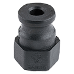
Banjo 75A1/2 3/4" x 1/2" Black Glass-Filled Polypropylene Cam and Groove Adapter, Type A Male Adapter x FPT Endsper EA · Sign in for price- Banjo 75B3/4 3/4" Black Glass-Filled Polypropylene Cam and Groove Coupling, Type B Female Camlock x MPT Ends, EPDM Sealper EA · Sign in for price
- Banjo 75PL 3/4" Black Glass-Filled Polypropylene Plugper EA · Sign in for price
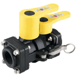
Banjo DM150A 1-1/2" Dry-Mate® DM150 Series Black Glass-Filled Polypropylene Dry Disconnect Coupling, Dry-Mate Male x FPT, FKM Sealper EA · Sign in for price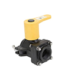
Banjo Dry-Mate™ Dry Disconnect 1-1/2" Male x Female NPT, Glass Filled Polypropylene Construction, EPDM Face Sealper EA · Sign in for price- Banjo DM150D 1-1/2" Dry-Mate® DM150 Series Black Glass-Filled Polypropylene Dry Disconnect Coupling, Dry-Mate Female x FPT, FKM Sealper EA · Sign in for price
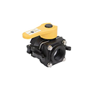
Banjo Dry-Mate™ Dry Disconnect 1-1/2" Female x Female NPT, Glass Filled Polypropylene Construction, EPDM Face SealCall for availabilityAsk a branch- Banjo DM200A 2" Dry-Mate® DM200 Series Black Glass-Filled Polypropylene Dry Disconnect Coupling, Dry-Mate Male x FPT, FKM Sealper EA · Sign in for price
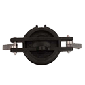
Banjo DM200CAP 1-1/2" & 2" Dry-Mate® Black Glass-Filled Polypropylene Replacement Dust Cap for Banjo Dry-Mate® Dry Disconnect Couplingper EA · Sign in for price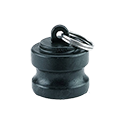
Banjo DM200PL 1-1/2" & 2" Dry-Mate® Black Glass-Filled Polypropylene Replacement Dust Plug for Banjo Dry-Mate® Dry Disconnect Couplingper EA · Sign in for price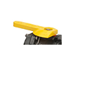
Banjo DM20153F 1-1/2" & 2" Dry-Mate® Yellow Glass-Filled Polypropylene Replacement Female Handle for Banjo Dry-Mate® Dry Disconnect Couplingper EA · Sign in for price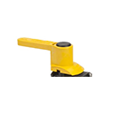
Banjo DM20153M 1-1/2" & 2" Dry-Mate® Yellow Glass-Filled Polypropylene Replacement Male Handle for Banjo Dry-Mate® Dry Disconnect Couplingper EA · Sign in for price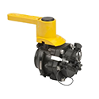
Banjo DM20200A 1-1/2" & 2" Dry-Mate® Male Repair Kit for Banjo Dry-Mate® Dry Disconnect Fittingsper EA · Sign in for price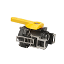
Banjo DM20200D 1-1/2" & 2" Dry-Mate® Female Repair Kit for Banjo Dry-Mate® Dry Disconnect Fittingsper EA · Sign in for price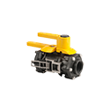
Banjo DM20294A 1-1/2" & 2" Dry-Mate® Black Replacement FKM Face Seal for Banjo Dry-Mate® Dry Disconnect Couplingper EA · Sign in for price- Banjo DM220A 2" Dry-Mate® DM220 Series Black Glass-Filled Polypropylene Dry Disconnect Coupling, Dry-Mate Male x FPT, FKM Sealper EA · Sign in for price
- Banjo DM220D 2" Dry-Mate® DM220 Series Black Glass-Filled Polypropylene Dry Disconnect Coupling, Dry-Mate Female x FPT, FKM Sealper EA · Sign in for price
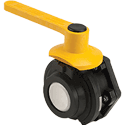
Banjo DM300AFP 3" Dry-Mate® DM300 Series Black Glass-Filled Polypropylene Dry Disconnect Coupling, Dry-Mate Male x FPT, FKM Sealper EA · Sign in for price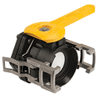
Banjo DM300DFP 3" Dry-Mate® DM300 Series Black Glass-Filled Polypropylene Dry Disconnect Coupling, Dry-Mate Female x FPT, FKM Sealper EA · Sign in for price